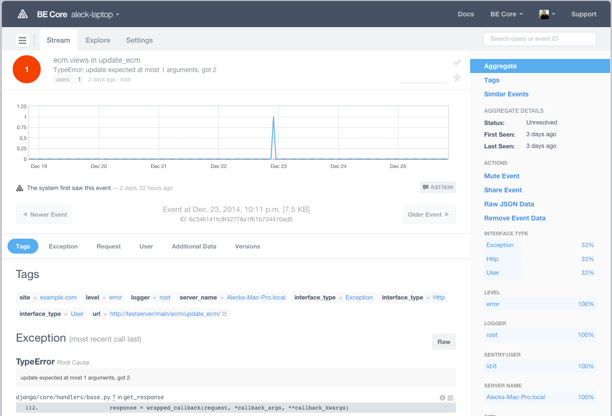
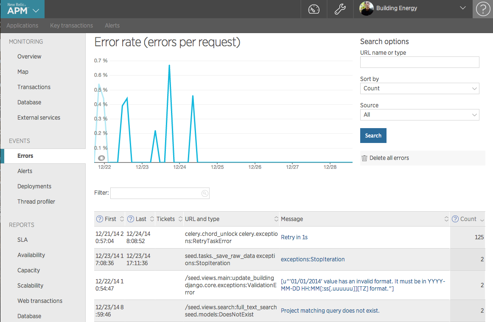

Created by Aleck Landgraf and friends / @aleck_landgraf / aleck.me/pdbpdx
for j in js:
mn = j.get('model','unknown')
js2[mn]=js2.get(mn,[])+[j]
your first line of defense
No excuses: your EOC (editor of choice) supports one!
for j in js:
mn = j.get('model','unknown')
js2[mn]=js2.get(mn,[])+[j]
for j in js:
mn = j.get('model','unknown')
js2[mn]=js2.get(mn,[])+[j]
print 'WTF', js2.get(mn,[])+[j]
better yet
for j in js:
mn = j.get('model','unknown')
js2[mn]=js2.get(mn,[])+[j]
print '\n\nline 72 of time_utils.py WTF', js2.get(mn,[])+[j], '\n\n'
pppp
source.python.django
print "\n\n\n...", ..., "\n\n\n"
import logging
logger = logging.getLogger(__name__)
for j in js:
mn = j.get('model','unknown')
js2[mn]=js2.get(mn,[])+[j]
logger.debug('\n\nline 72 of time_utils.py WTF', js2.get(mn,[])+[j], '\n\n')
get comfortable reading these
File "django/core/handlers/base.py", line 112, in get_response
response = wrapped_callback(request, *callback_args, **callback_kwargs)
File "seed/utils/api.py", line 91, in _wrapped
return fn(request, *args, **kwargs)
File "annoying/decorators.py", line 164, in wrapper
response = func(request, *args, **kwargs)
File "superperms/orgs/decorators.py", line 197, in _wrapped
return fn(request, *args, **kwargs)
File "django/contrib/auth/decorators.py", line 22, in _wrapped_view
return view_func(request, *args, **kwargs)
File "ecm/views.py", line 150, in update_ecm
ecm.mapped_data.update(ecm_data.get('mapped_data'), {})
TypeError: update expected at most 1 arguments, got 2
like getsentry.com
or newrelic.com
with ipython's rich feature set
some regular python Kung Fu
```pycon In [1]: time.time() Out[1]: 1417210518.229331 In [2]: t = _ ```
```console $ pip install ipython $ ipython ```
```pycon In [1]: import time In [2]: time. ```
TAB
```pycon In [2]: time. time.accept2dyear time.clock time.gmtime time.sleep time.struct_time time.tzname time.altzone time.ctime time.localtime time.strftime time.time time.tzset time.asctime time.daylight time.mktime time.strptime time.timezone ```
```pycon In [1]: class Greeter(object): def __init__(self, name='Aleck'): super(Greeter, self).__init__() self.name = name def greet(self): """prints hello ``self.name``""" print 'hello {}'.format(self.name) In [2]: d = Greeter() ```
?
```pycon
In [3]: d.greet?
Type: instancemethod
String form:
??
```pycon In [4]: d.greet?? Type: instancemethod ... Source: def greet(self): """prints hello ``self.name``""" print 'hello {}'.format(self.name) ```
```pycon In [1]: class Greeter(object): def __init__(self, name='Aleck'): super(Greeter, self).__init__() self.name = name def greet(self): """prints hello ``self.name``""" print 'hello {}'.format(self.name) In [2]: d = Greeter() ```
dir
```pycon In [3]: dir(d) Out[3]: ['__class__', '__delattr__', '__dict__', '__doc__', '__format__', '__getattribute__', '__hash__', '__init__', '__module__', '__new__', '__reduce__', '__reduce_ex__', '__repr__', '__setattr__', '__sizeof__', '__str__', '__subclasshook__', '__weakref__', 'greet', 'name'] ```
__dict__
```pycon In [4]: d.__dict__ Out[4]: {'name': 'Aleck'} ```
pdb ships with python
ipdb (not "The Internet Pinball Machine Database")
PuDB ('Urwid': full-screen, console based)
all the wonder of ipython plus some neat tricks:
install
run a script through pudb
run tests with pudb
within your code
```python for u in users: u.set_home_location() ```
BLAMO!!! OK, try this...
```python for u in users: try: u.set_home_location() except KeyError: import pudb; pudb.set_trace() ```
```python n = len(cols) ```
use locals() or !command
```python # assuming ipython shell in pudb my_n = locals()['n'] !n ```
How many DB queries are you making?
```python # django example import json from django.db import connection, reset_queries reset_queries() connection.queries = [] # ... code to inspect here for user in User.objects.all(): # my foreign key lookup per iteration if user.profile.address == addr: user.send_notification(notification) qs = list(connection.queries) print 'number of queries made:', len(qs) print json.dumps(qs, indent=4) ```
There are often ways to reduce these: ```python for user in User.objects.all().select_related('profile'): ```
```python sync_to_other_db( session, map( serializer, huge_query ) ) ```
```python from queryset_iterator import queryset_iterator sync_to_other_db( session, map( serializer, queryset_iterator(huge_query) ) ) ```
imap vs. map
```python from queryset_iterator import queryset_iterator sync_to_other_db( session, map( serializer, queryset_iterator(huge_query) ) ) ```
this still realizes the entire query in memory
```python from queryset_iterator import queryset_iterator import itertools sync_to_other_db( session, itertools.imap( serializer, queryset_iterator(huge_query) ) ) ```
I don't know, but any amount prevents technical debt.
```console Name Stmts Miss Cover Missing ------------------------------------------- espm 8 0 100% espm.espm 97 3 97% 109-112 espm.models 276 0 100% espm.util 19 0 100% ------------------------------------------- TOTAL 400 3 99% ---------------------------------------------------------------------- Ran 32 tests in 0.255s ```
```console python setup.py nosetests --cover-min-percentage=100 ```
aleck.landgraf@gmail.com